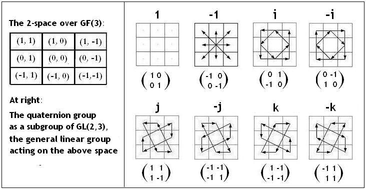
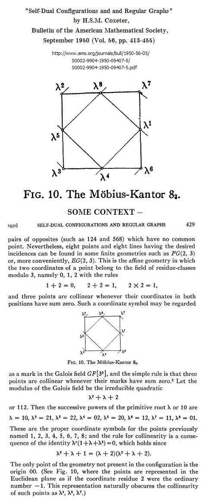

Finite Geometry Notes
|
Home
|
Site Map
|
Author
|
Quaternions in an Affine Galois Plane

Related material:
The Galois Quaternion: A Story
,
Visualizing GL(2,p)
, and
Group Actions: 1984-2009
Update of August 7, 2010 --
Some background from 1950

Page created by Steven H. Cullinane on January 6, 2010
.